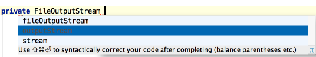

The CodeCompletion feature can suggest a name for a variable when you declare it. For example, start typing
private FileOutputStream
and press &shortcut:CodeCompletion;.

You can customize name prefixes for local variables, parameters, instance and static fields in File | Settings | Code Style.